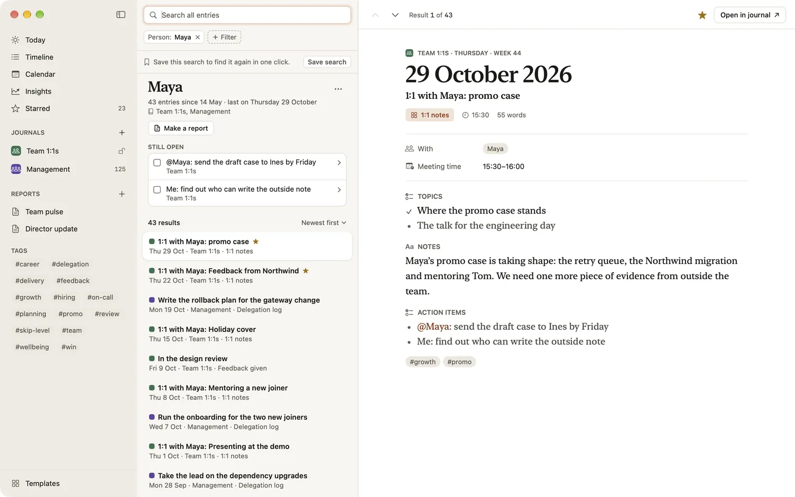
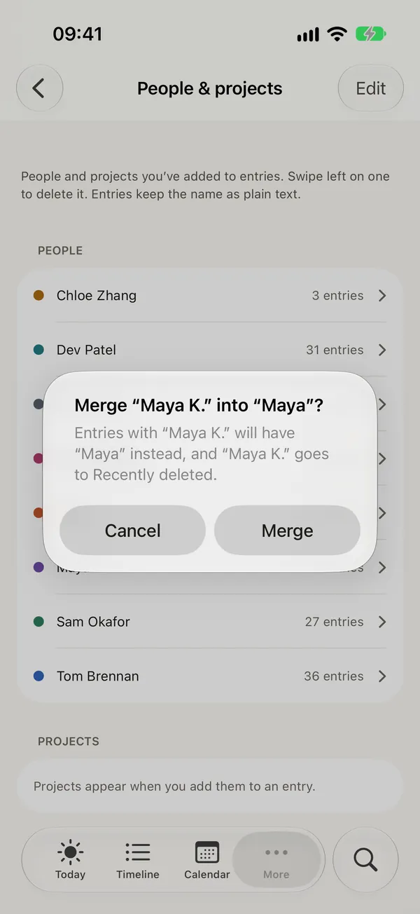

People and projects
The people you work with and the projects or clients you work on run through every journal. Dayfolio keeps one list of each, shared by all your journals, so you can see everything about one name in one place: every entry, the action items still open, and a report about them.
Add people and projects
- In a Person or Project field, type a name and press Return. If it’s new, Dayfolio offers to create it, as in “Create person “Maya””. Next time, it suggests the name as you type.
- In the text, type @ and a name in a rich-text field or a checklist item. The name becomes a chip, and the entry counts as being with that person.
- Tags work the same way in a Tags field. They’re lowercase, with hyphens for spaces: “Release notes” becomes
#release-notes.
There’s one person, and one project, per name, ignoring capitals. If two of your devices add the same name before they sync, they become one.
A project can be the client you work for. In the library’s templates, client-facing ones call the field Client, Account or Deal; they’re all projects.
Everything with one name
Tap a name in an entry to see everything about it:
- a person’s menu has Entries with Maya,
- a project’s has Entries for Payments API,
- a tag’s has Entries tagged #release.
On a Mac, right-click the name. In an entry you can only read, and in Search’s preview, the name is a link and opens the page at once. Timeline and Calendar cards offer the same names in their menus.
The page shows the name with how many entries mention it, since when and when last, and which journals they’re in, such as “18 entries since 3 June · last on Friday 9 October”. Under it:
- Still open lists the unticked items of checklists that carry over, from the latest entry of each template that mentions the name, with how long each has been open. A tap opens its entry. See Carry-over between entries.
- Make a report starts a report about that name: for a person, a performance review of the last six months; for a project, last week’s weekly report; for a tag, last month’s. See Reports.
- The entries themselves, newest first, with where each mentions the name.

Rename a person or project
- On the name’s page, choose ⋯ beside the name, or go to Settings › People & projects and open the name’s menu. On a Mac you can also choose the pencil, double-click the row or press Return.
- Choose Rename…, type the new name and confirm.
Person and project fields show the new name in every entry, and report settings and saved searches follow it. Reports you’ve already made keep the names they were made with.
Merge two names
When “Maya K.” and “Maya” are the same person, rename one to the other’s name. Dayfolio asks first: “Merge “Maya K.” into “Maya”?”, saying what will move.
Merge moves everything to the name you typed: person and project fields, @-mentions in the text (which keep the words you wrote), saved searches and report filters. The name you typed keeps its colour; the other goes to Recently deleted. Changed your mind? Choose Undo on the message that confirms the merge, or undo as you’d undo anything else (⌘Z on a Mac), and everything moves back.

Hourly rates
A project you bill can have an hourly rate in its own currency. Choose Hourly rate… in the project’s ⋯ menu on its page, or in its menu in Settings › People & projects, then enter the amount and the currency. Reports turn the project’s billable hours into amounts, never converting between currencies. Remove rate takes it off. See Reports.
Delete a person or project
In Settings › People & projects, each name shows how many entries mention it, with Delete. A deleted name waits in Recently deleted for 30 days. Meanwhile, entries that mentioned it show it as plain text, in the app and in exports; Restore turns it back into a chip. Typing the same name again brings back the old one.
Locked journals
A name that only a locked journal mentions isn’t listed anywhere while the journal is locked, and can’t be renamed or deleted until you unlock it. Counts and dates on a name’s page cover only journals you can see, with a line saying that journals you lock are left out. See Locked journals and privacy.
What’s free
Adding, renaming, merging and deleting people and projects, and setting hourly rates, are all free.